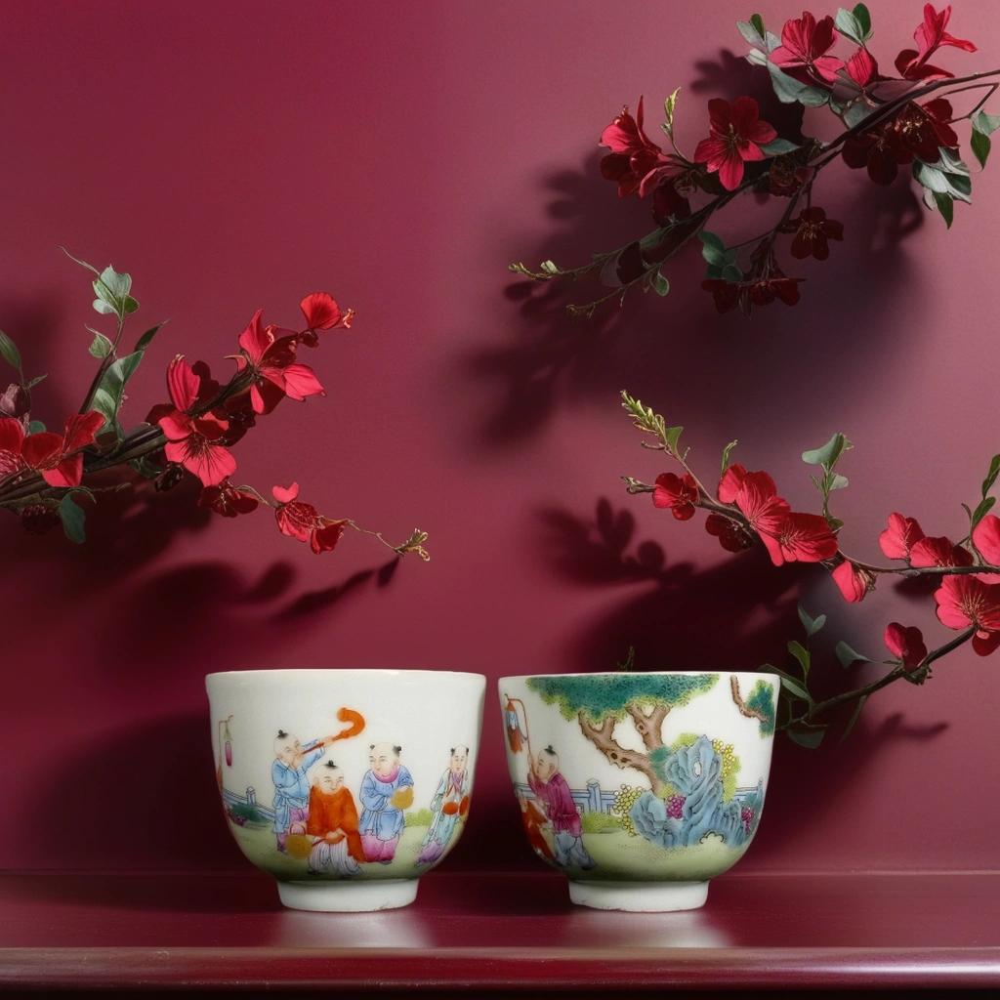
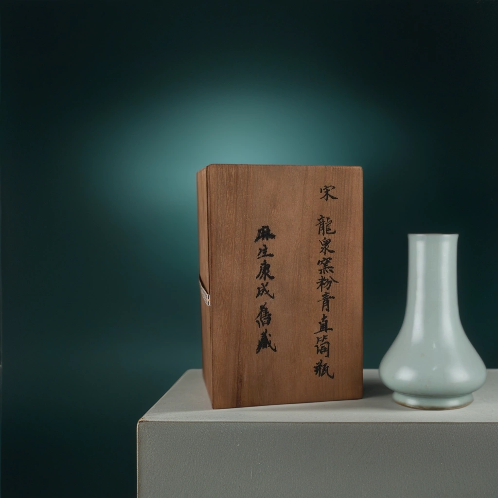
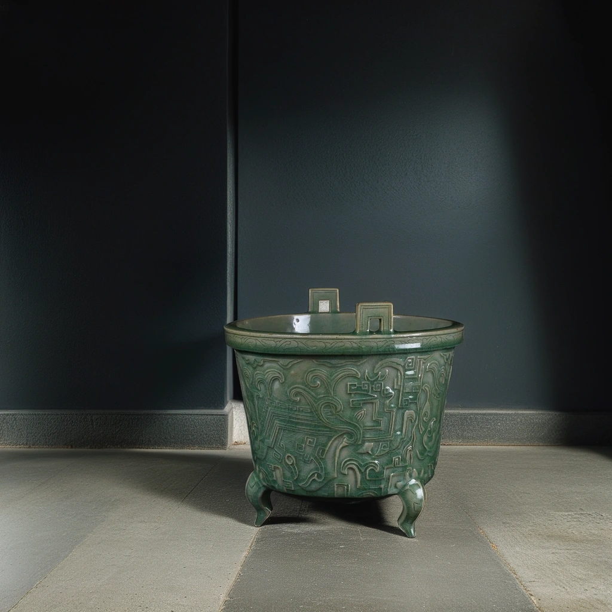
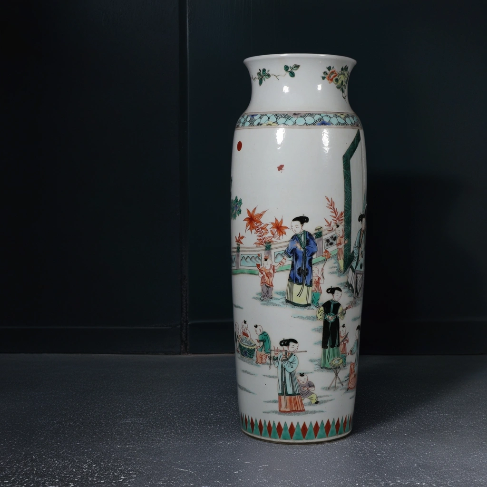

堂阁佳品（原“荣古斋”）_B·M
Beam & Muse 私人艺术藏品展厅
—— 个人审美与收藏品位的传承与新生 ——
明·正德 歌舞伎青花人物罐
罐身以青花绘制歌舞伎人物故事，发色沉着，构图疏朗。造型端庄，画意雅致，是明代官窑青花人物题材中极具代表性的珍品。
宋 龙泉梅子青瓷盘
这是一件宋代龙泉窑经典的梅子青瓷盘，釉色莹润，胎体端正，盘面洁净素雅，展现出宋瓷极致的简约美学。青釉如玉，清透淡雅，是品茗、点心、陈设的理想器物，亦为文人案头雅玩之选。
适合收藏、陈设与日常生活的诗意融合。
适合收藏、陈设与日常生活的诗意融合。
清 斗彩降伏（降福）妖魔笔海
斗彩笔海绘降福（伏）图，色彩绚丽，人物神态生动，布局丰富有致。取“降魔”为“降福”，寄寓吉祥美意。器物大气精致，是书房案头的雅玩与护身符，极具收藏与装饰价值。
元末明初 青花人物龙凤执壶
此执壶造型独特，龙柄凤嘴，身绘青花人物故事，装饰生动。青花发色幽雅，气度高华，龙凤寓意祥瑞，是元明过渡时期青花瓷器中极具代表性的珍品。既可陈设案头，亦宜收藏赏玩。

清雍正 粉彩麟趾呈祥对杯
此对杯为清雍正时期粉彩珍品，杯身一面描绘麒麟、童子，一面彩绘花卉瑞草，色彩柔和，粉润秀雅，意蕴吉祥。
“麟趾呈祥”，象征子孙兴旺、家族和美，是皇家和文人追求美满生活的美好祝愿。
对杯成对陈列，更显灵动温婉，既可赏玩，又宜珍藏。适合放置于“吉庆有余”“祥瑞祈愿”展区，点缀温馨高雅的氛围。
“麟趾呈祥”，象征子孙兴旺、家族和美，是皇家和文人追求美满生活的美好祝愿。
对杯成对陈列，更显灵动温婉，既可赏玩，又宜珍藏。适合放置于“吉庆有余”“祥瑞祈愿”展区，点缀温馨高雅的氛围。

宋 龙泉粉青釉直筒瓶
此瓶为宋代龙泉窑粉青釉直筒瓶，瓶身挺拔，釉色莹润柔和，质地坚致。虽学界“龙官”身份尚存争议，但其釉色与器形已具备龙泉“官”器的标准特征，为宋瓷体系的重要实物见证。
此器简约静穆，寓意风骨与内敛，承载着南宋文人的审美追求。配木盒旧题跋，见证其传承与流转。
此器简约静穆，寓意风骨与内敛，承载着南宋文人的审美追求。配木盒旧题跋，见证其传承与流转。
南宋 龙泉（官窑）六辦海棠洗
南宋龙泉官窑六辦海棠洗，造型优美，釉色温润，呈现出官窑独有的开片美感。为南宋宫廷用瓷代表作，兼具实用与艺术价值。
宋 吉州窑黑釉剔刻花唐草纹梅瓶与小罐
经典的黑釉剔刻唐草纹样，瓶型端庄，小罐古朴，展现宋代工艺美感。
吉州窑以剔刻花黑釉瓷器著称，极具收藏和历史价值。
吉州窑以剔刻花黑釉瓷器著称，极具收藏和历史价值。
宋 钧窑玫瑰红釉四方洗
这件四方洗通体施玫瑰红釉，釉色绚丽温润，四角转折劲挺，造型规整。为宋代钧窑的代表性器物之一，藏家雅赏之选。

高丽仿龙泉窑青釉剔刻龙纹三足鼎
此鼎为高丽时期仿中国龙泉窑青釉剔刻龙纹三足鼎，鼎身高挑，三足挺拔，釉色青翠，纹饰剔刻精美。龙纹动感十足，显示出浓厚的东亚王朝美学与技艺交流。
年代尚待进一步考证，但其风格已显现南宋龙泉窑鼎盛期的典型特征。既是高丽对中国瓷艺的吸纳与创新，也是东亚文明融合互鉴的实物见证。
适合陈列于东西文化交流专题，是瓷器爱好者和历史研究者不可多得的赏玩之器。
年代尚待进一步考证，但其风格已显现南宋龙泉窑鼎盛期的典型特征。既是高丽对中国瓷艺的吸纳与创新，也是东亚文明融合互鉴的实物见证。
适合陈列于东西文化交流专题，是瓷器爱好者和历史研究者不可多得的赏玩之器。

清 五彩多子多福筒瓶（高大）
这件清代五彩筒瓶，体量高大，通体以多子多福为主题，描绘童子嬉戏、庭院花木、祥禽瑞草，色彩明快，布局繁而不乱。
五彩釉料层次丰富，人物生动有趣，花木葱茏，童子笑颜灿烂，寓意子孙繁盛、家族兴旺，是清代盛世对美满生活的热切期盼。
造型修长挺拔，画面祥瑞喜庆，既具观赏价值，又是家庭、庙堂祈福之珍器。极适合陈列于“吉祥如意”“盛世风华”主题展柜，寓意美好、祝福连绵。
五彩釉料层次丰富，人物生动有趣，花木葱茏，童子笑颜灿烂，寓意子孙繁盛、家族兴旺，是清代盛世对美满生活的热切期盼。
造型修长挺拔，画面祥瑞喜庆，既具观赏价值，又是家庭、庙堂祈福之珍器。极适合陈列于“吉祥如意”“盛世风华”主题展柜，寓意美好、祝福连绵。